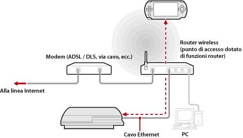
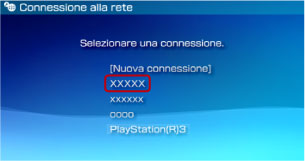

Rete > Uso della riproduzione remota (tramite un punto di accesso)
Uso della riproduzione remota (tramite un punto di accesso)
Collegare il sistema PS3™ ad un punto di accesso utilizzando un cavo Ethernet, quindi utilizzare la funzione LAN wireless del sistema PSP™ per effettuare la connessione al sistema PS3™ tramite il punto di accesso.
Esempio di configurazione comune

Note
- Un router senza fili è un dispositivo che attribuisce al router funzionalità di access point. Un punto di accesso è un dispositivo che consente di effettuare la connessione a una rete senza l'uso di cavi. Un router è un dispositivo impiegato per la condivisione di una connessione Internet tra più dispositivi.
- Un modem può essere dotato di funzionalità router. Collegare il sistema PS3™ a un dispositivo dotato di funzionalità router.
- Se il punto di accesso e il modem dispongono entrambi della funzionalità router, disattivare la funzionalità su uno dei due dispositivi. Il sistema PS3™ e il sistema PSP™ devono essere connessi alla stessa rete. Se vengono utilizzati contemporaneametne due o più router, il sistema PS3™ e il sistema PSP™ possono essere connessi a reti separate, impedendo l'uso della riproduzione remota.
Preparazione all'uso (sistema PS3™ e sistema PSP™)
Per utilizzare la riproduzione remota per la prima volta, è necessario registrare (pairing) il sistema PSP™ con il sistema PS3™. La registrazione del sistema può essere eseguita da  (Impostazioni) >
(Impostazioni) >  (Impostazioni di riproduzione remota) > [Registra dispositivo].
(Impostazioni di riproduzione remota) > [Registra dispositivo].
Preparazione all'uso (sistema PSP™)
Creare una connessione di rete per collegare il sistema PSP™ a un punto di accesso. Se il sitema PSP™ possiede già una connessione di rete salvata da utilizzare nel collegamento a una rete tramite un punto di accesso, non è necessario creare una nuova connessione di rete. Per ulteriori informazioni sulla creazione di una connessione di rete, consultare la guida dell'utente per il sistema PSP™.
Utilizzo della riproduzione remota
1. |
Sul sistema PS3™, selezionare |
|---|---|
2. |
Sul sistema PSP™, selezionare |
3. |
Selezionare [Collega via rete privata]. |
4. |
Selezionare nell'elenco la connessione al punto di accesso da utilizzare per la riproduzione remota.  Se la connessione riesce, la schermata del sistema PS3™ viene visualizzata sul sistema PSP™. |
 (Rete) >
(Rete) >  (Riproduzione remota).
(Riproduzione remota). (Riproduzione remota).
(Riproduzione remota).Note
- La riproduzione remota può essere utilizzata nel raggio d'azione del segnale del punto di accesso.
- Se si abilita l'impostazione di avvio remoto del sistema PS3™, è possibile impostare il sistema per l'accensione automatica (Attiva LAN). In questo caso, non è necessario eseguire il punto 1 sopra. Per i dettagli, vedere (Impostazioni) > (Impostazioni di riproduzione remota) > [Avvio remoto] in questa guida.
Uscita dalla riproduzione remota
Premere il tasto PS (tasto HOME) sul sistema PSP™, quindi selezionare [Esci da Riproduzione remota] > [Esci e spegni il sistema PS3™].
Nota
Selezionare [Esci senza spegnere il sistema PS3™] se si utilizza il sistema PS3™ per copiare file o per eseguire il download in background e altre operazioni che richiedono che il sistema resti acceso.